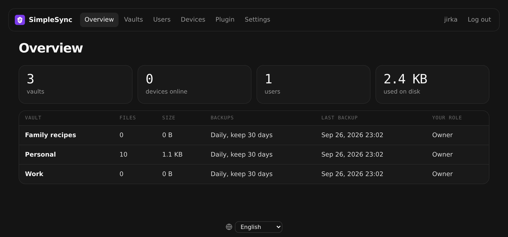

Start the server
One Docker container. Paste a YAML into ZimaOS or run one command on a VPS, open the web page and create your admin account.
$ docker run -p 8080:8080 \
ghcr.io/jirkacepelka/obsisync
SimpleSync is a small server and an Obsidian plugin. Enter the server address, your name and password, then pick a vault. Your notes stay on hardware you own: a ZimaOS box, a NAS or a €4 VPS.
Free and open source (MIT) · Desktop, iPhone, iPad and Android
No config files, no database to set up, no cloud accounts. The setup guide walks through each step.
One Docker container. Paste a YAML into ZimaOS or run one command on a VPS, open the web page and create your admin account.
Install SimpleSync from Obsidian's community plugins, then fill in three fields. Nothing else to configure.
The plugin lists the vaults your account can use. Pick one and click Connect. Every device you connect stays in sync.
The server announces new changes over a WebSocket and devices fetch only what's new.
Edits to different parts of a note are combined. When they overlap, both versions are kept.
Every change is kept. Preview any old version in the browser and restore it with one click.
Per vault: every hour, 6 hours, day or week. Keep them from 7 days to forever, optionally as ZIP files.
Share a vault with family or a team as owner, editor or read only. Log out a lost phone instantly.
A new or empty device can never overwrite your vault. Local leftovers go to Obsidian's trash.
Download a vault from the web admin with the plugin already set up. Open it, type your password, done.
A ~27 MB image that uses a few tens of MB of RAM. Go and SQLite, on amd64 and arm64.
English, Čeština, Slovenčina, Deutsch, Français, Español, Italiano and Polski.
Every write is checked against the version the device last saw. If another device got there first, SimpleSync runs a three-way merge and changes on different lines simply combine. If the same line changed on both sides, the server version stays and yours is saved next to it as Trip to Japan (conflict 2026-09-26 1530 jirka).md.
Users, vaults, sharing, devices, history and backups. These are real screenshots.

Overview: your vaults, their backup plans, devices online and disk usage.
Then open the server's address in a browser and create the administrator account right away.
App Store›+›Install a customized app›YAML. Delete what's there, paste this, click Install and open http://<zimaos-ip>:8080.
name: obsisync
services:
obsisync:
image: ghcr.io/jirkacepelka/obsisync:latest
container_name: obsisync
restart: unless-stopped
ports:
- target: 8080
published: "8080"
protocol: tcp
environment:
TZ: Europe/Prague
volumes:
- type: bind
source: /DATA/AppData/obsisync/data
target: /data
x-casaos:
architectures:
- amd64
- arm64
main: obsisync
category: Utilities
title:
en_us: SimpleSync
tagline:
en_us: Simple self-hosted sync for Obsidian
icon: https://raw.githubusercontent.com/jirkacepelka/SimpleSync/main/server/internal/web/static/icon.svg
index: /
port_map: "8080"
scheme: httpPoint a DNS A record such as sync.example.com at the VPS, then run this. Caddy gets the HTTPS certificate by itself. A 1 GB RAM VPS is enough.
mkdir simplesync && cd simplesync
curl -O https://raw.githubusercontent.com/jirkacepelka/SimpleSync/main/deploy/docker-compose.caddy.yml
DOMAIN=sync.example.com docker compose -f docker-compose.caddy.yml up -dAnything with Docker: a NAS, a Raspberry Pi, a home server.
docker run -d --name obsisync -p 8080:8080 -e TZ=Europe/Prague \
-v $PWD/data:/data --restart unless-stopped \
ghcr.io/jirkacepelka/obsisync:latestSettings › Community plugins › Browse, search for “SimpleSync”, install and enable it.
The plugin talks only to the server address you enter. No telemetry, no cloud service, no account with anyone else.
Your password is used once to get a device token. The server keeps only a hash of the token, and passwords are hashed with Argon2id.
Every request is authorized by the server and login guessing is throttled per address and per account. Use HTTPS to encrypt traffic in transit.
Yes. SimpleSync is open source under the MIT license. You only pay for the machine it runs on, which is often a box you already own.
It does the same job, keeping vaults in sync between devices, but on your own server. Obsidian Sync is a great paid service; SimpleSync is for people who want to self-host.
If the vault on the server has content, the server always wins: the device becomes an exact copy and nothing is uploaded from it. Files that were only on the device are moved to Obsidian's trash, so nothing is lost. The plugin warns you before this happens. To upload an existing vault, use “Create a new vault from this one”.
Yes. On a VPS you get HTTPS automatically. At home, the easiest way is Tailscale or a Cloudflare Tunnel. See Reach it from anywhere.
No. The server can read the notes, which is what makes version previews and server-side backups possible. Since you run the server, that's you.
Everything lives in one data folder. Copy it, or use the built-in scheduled backups with optional ZIP files.